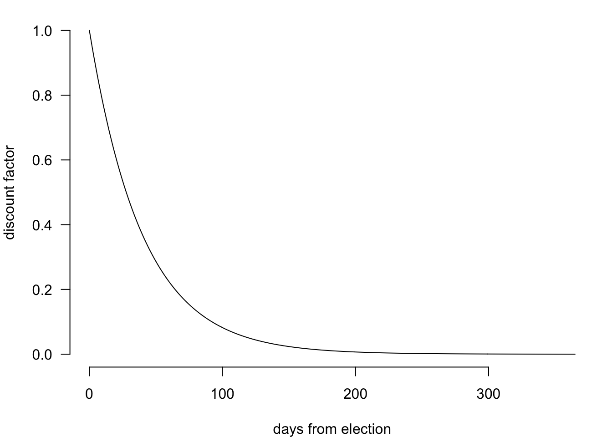
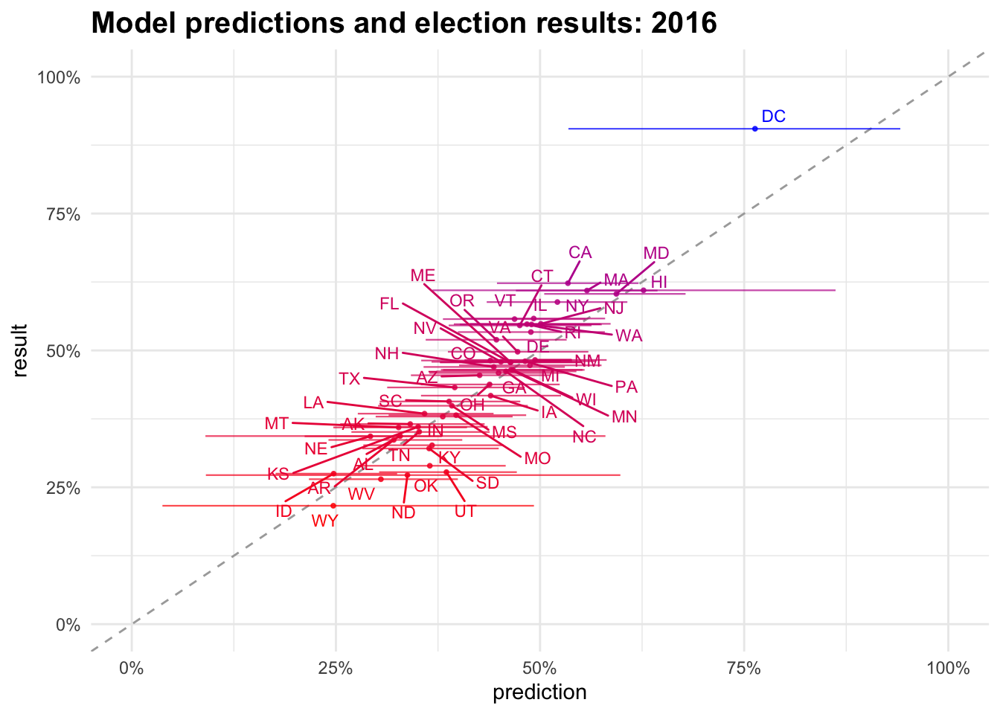

Yapa is a simple poll aggregator that estimates state-level support for US presidential candidates by combining state-level polls with prior election results.
We model state level support for each presidential candidate in three layers:
Specifically, the number of respondents that support each candidate in each poll \(y_{p, c}\) is drawn from the total respondents in that poll \(n_p\) at a rate specific to the candidate and the state \(\theta_{s, c}\). The rate parameters are distributed with a candidate-state specific center \(\alpha_{c, s}\) and state specific scale \(t_s\). The sum of proportions for each candidate must equal one. Finally, to simulate true underlying support, we first sample a vector of biases for each candidate, then sample support based on each state’s rate parameter and the sampled bias. These simulations are repeated tens of thousands of times.
\[ \begin{align} y_{p, c} &\sim Binomial(n_p, \theta_{s, c}) \\ \theta_{s, c} &\sim Student\_t(\nu, \alpha_{s, c}, \tau_{s}) \\ \sum_c \theta_s &= 1 \end{align} \]
All code and data are available at github.com/alexpavlakis/yapa.
Polls tend to contribute more to final inferences if they have a) larger sample sizes and b) are closer to the election. We weight polls by recency according to the exponential decay model:
\[ wt_p = e^\frac{-days\_out_p}{60} \]

To evaluate this model, we simulate potential election results for 2016 based on 2012 state outcomes and 2016 state polls, and compare those to the actual results. The plot below displays the predictions and 90% uncertain intervals for Clinton’s vote share in each state (x axis) with the actual election results (y axis). 94% of actual results fall within the 90% intervals. This model would have given Trump about a 70% chance of winning the election, and it would have handled the uncertainty in key battleground states much better than other poll aggregators and forecasters.

The table below contains predictions for Clinton’s vote share in each state, their lower and upper uncertainty intervals, and the actual result.